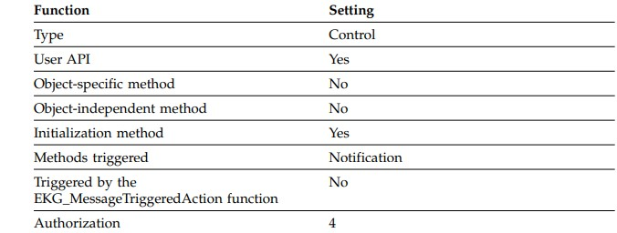
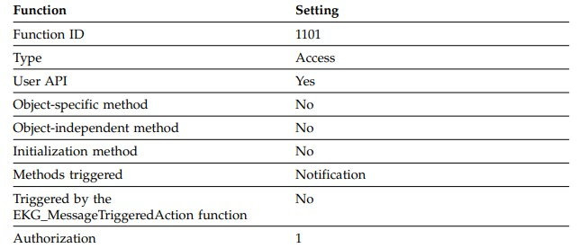
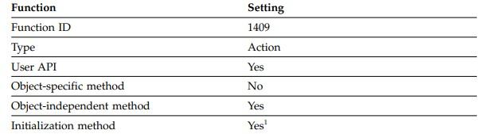

351-400
Every time a field is changed, the associated subscription list of notification methods is processed, and each method in the list is run. The intent of these methods is to propagate knowledge of changes both to other objects and to applications outside RODM that need to be informed about changes. Notification methods can include logic to selectively notify, such as to notify only when a threshold is surpassed.
When a change transaction is specified against a field, all notification methods defined on that field are triggered. These notification methods are triggered regardless of whether or not a change method is defined on the field and whether or not the value of the field actually changes. Each notification method is passed a Change_status parameter by RODM, which informs the method whether or not the value of the field was changed by the change transaction.
To avoid triggering notification methods, use functions that do not trigger methods. These functions do not trigger notification methods: v EKG_LinkNoTrigger v EKG_UnlinkNoTrigger v EKG_ChangeSubfield v EKG_SwapSubfield
The subscription list on the child is not processed, and the notification methods are not run. Notification methods are active only when values in fields are locally present. This practice is similar to the practice of avoiding triggering change methods where the value in the associated field is inherited, and a change is made to the parent field.
Some notification methods can delete themselves after their first execution. For example, an application submits a RODM transaction that causes a command to be submitted to the target system where the command is attempting to vary a device offline. Completion of the request takes time.
The transaction cannot wait for the response, and the application needs to be informed when the command is complete. The code, which might be a change method implementing the original transaction, places a notification method in the subscription (notification) queue for the field. When the device is varied offline, the notification method pulls itself out of the subscription queue and notifies the original application that the requested vary command has been successfully run.
When a method calls the EKG_AddNotifySubscription function, that method must acquire the required information, identified by the data type SubscriptSpec, to actually perform the function. This information is obtained through long-lived-parameters and short-lived-parameters.
Notification methods are placed in the subscription list of a field upon an explicit request made by an application using the EKG_AddNotifySubscription function in the user API and method API. Notification methods can be deleted from a subscription list using the EKG_DeleteNotifySubscription function.
The subscription list for a field is always processed in the order that the notification methods were placed in the subscription queue. The methods are processed, one at a time, starting with the first method placed in queue.
There is another issue of how inheritance interacts with notification methods. Notification subscriptions are not inherited from a parent class to a child class. However, they are effectively inherited from a class to an object, where the class isthe primary parent of the object. Notification subscriptions can be associated with any class or object. When it is associated with a class and that class field changes, the notification list on that class field is run. When a change is made to an object field, the notification subscriptions assigned to the field in that object are run. Any notification subscriptions assigned to the same field in the primary parent are also run, enabling you to use a single notification subscription at the class level for all objects in the class. Methods assigned to an object parent class can use the “WhereAmI” method API to determine the circumstances under which their execution has been triggered.
The NetView program supplies four sample notification methods in source format. Study these methods to learn more about writing your own notification method. The sample methods are the following members of the CNMSAMP data set: v EKGNEQL v EKGNLST v EKGNOTF v EKGNTHD
These methods are described in “RODM Notification Methods” on page 489.
Figure 82 shows an example of notification parameters for PL/I. Figure 83 shows an example of notification parameters for C.
Named Methods
A named method is indicated by a field defined as MethodSpec, containing: v Method object ID v Long-lived method parameters A named method: v Allows for multiple coordinated actions against an objectv Named method field can also have query, change, notify, prev_val, and time stamp subfields.
The named method parameters are:
field_id
FieldID of the field being run.
long_lived_parms
SelfDefining string containing application-defined parameters. These parameters are provided to the named method when it is installed.
short_lived_parms
SelfDefining string containing application-defined parameters. These parameters are provided to the method dynamically during the actual API function request that triggers the named method.
The method is considered named because it can be referenced (queried, changed and triggered) using the field name. The field name represents a field in an object with the data type of MethodSpec. A field of this type contains a method name and a list of long-lived field parameters that are available to the method when the method is run. Explicit actions available in the user API and method API are used to trigger named methods.
Named methods enable you to change more than one field of a class or object. RODM locks all of the fields of the target object when a named method is run. No other method or user application can access those fields until the named method completes. This enables you to coordinate the updates to several fields on a target class or object.
Because many named methods can all be associated with all objects of a class, named methods are typically inherited from the class. Many standard transactions against objects can be implemented by either methods that are supplied with the NetView program or user-written methods.
A field of data type MethodSpec, a named method field, can have its own query, change, notify, and other standard subfields. The data in the value subfield of such a field includes the method name and a list of field parameters. The specified field parameters can be the targets of actions taken by the named method, or they can contain arguments to the execution of the named method. As with query and change methods, the long-lived list of field parameters is determined when the named method field is assigned a value. The contents of any fields referenced through the long-lived parameters can be set at any time.
Besides the field parameters, another parameter can be passed at execution time to a named method by the application that triggers the method. This is called a short-lived parameter. Unlike long-lived field parameters, it is not preserved in any way after the named method has run. All short-lived parameters on named methods must be of data type SelfDefining of maximum length 254. Such short-lived parameters are a variable length string of bytes that can be structured in any way that the requesting application and the named method are written to recognize.
The NetView program supplies a sample named method in source format. Study this method to learn more about writing your own named method. The sample method is the member EKGMIMV of the CNMSAMP data set. This method is described in “RODM Named Methods” on page 493.
Figure 84 shows an example of named method parameters for PL/I. Figure 85 shows an example of named method parameters for C.
A named method has access to the same data, and has the same abilities as query and change methods. However, the explicit invocation of named methods is at the discretion of applications using RODM, and named methods are free form in the function that they provide if the function can be implemented with the available data and services.
Inheritance in Object-Specific Methods
Query, change, notify, and named methods are all object-specific methods. Of these methods, only named methods are values in fields of RODM objects. Query, change, and notify methods are all stored in subfields of objects. On an object, the named method fields and subfields on fields are inherited from the subfields of the public classes of that object.
In the same way, the values in named method fields and the values in query and change subfields can be inherited through primary inheritance, using the standard principles for supporting inheritance in RODM. Notify methods are inherited from the primary parent to its object children. They are not inherited throughout the class inheritance tree. However, the object fields can additionally have local values that do not override the class-level notification subscriptions. (So standard inheritance of values does not apply to notification subfields.)
Named methods, query methods, change methods and notification methods can also all exist on classes. Change methods on classes (as on objects) can be used to validate changes before they are made, or they can be used to validate a user's authority to make those changes. Query methods can validate a requestor's authority to see the requested data, or they can validate data before it is returned.
Likewise, named methods on classes can be used in ways similar to the ways such methods are used on objects. Complex changes to a class can be run by a named method, or general-purpose functions, applicable to many individual classes, can be implemented with named methods. Finally, notification methods are also valuable on classes.
Change and notification methods on children that are inheriting values from parents are not triggered when the inherited values are changed on parents.
Therefore, notification methods are required on parents (which can be classes) so that user applications can be notified when parameters and values change on parents.
The main purpose of the primary hierarchy of classes is to make it easy to specify the organization of and default values in RODM objects. The most common values that are inherited at the object level from the primary hierarchy include:
Methods and parameters to control the management of RODM data to reflect real-world objects
Policy parameters that indicate standard limits and thresholds
Long-lived characteristics, such as capacity, of RODM objects where those characteristics are needed to manage real-world objects
These methods and values appear in fields on classes so they can be stated once and then inherited by many objects through the primary hierarchy.
When a value that is a method is inherited by a child, if that method is triggered and run for a child, execution takes place in the context of the child. While the method resided on the parent, only its name and its long-lived parameters are picked up through the inheritance process. When such a method runs and asks for the contents of a field, it gets the contents of that field on the child entity.
A query, change, or named method installed on a class can fill two roles. The method can be the default change method inherited by children and applied in the context of those children (including children that are objects instead of classes), and it can be triggered in the standard way (query, change of field, direct invocation) in the context of the parent.
Be aware that object-specific method you write can sometimes run on an object and at other times can run on a class. The same kinds of capabilities are available for both objects and classes, using the same method API calls. Many object-specific methods look at the WhatIAm field on the current entity to discover the context in which the method is executing, and different actions might be appropriate in different contexts.
Query, change, named, and notification methods on fields of classes are triggered as part of transactions against those classes just as those kinds of methods are triggered on objects. Also, query, change, and named methods exist on fields of classes to support inheritance of those methods by objects, but inheritance of values in notification subfields is not supported in RODM.
If a notification list exists through inheritance, it begins as a null value. A null value in the notification list field is functionally equivalent to no list at all. Entries can be added to a notification list by using the EKG_AddNotifySubscription function.
In summary, named methods and query, change, and notify subfields all function in the standard way both on private and on public fields of classes. There is no inheritance involving private fields, but query, change, and notification methods are run when the corresponding field is queried or changed. When a field is on a class (as with fields on objects), a change transaction for the field triggers change and notification methods, but a change transaction for the value subfield of a field does not trigger change and notification methods. This function is the same as that supported for objects.
Null Method
RODM provides a special method named NullMeth. You can use the NullMeth object ID in place of any object specific method. NullMeth returns control to its caller without doing any processing. The value NullMeth can be inherited in a field or subfield from a parent class. If the value of a field of type MethodSpec is queried for a null method, the ObjectID for NullMeth is returned in the response block.
Using the NullMeth method name, a query or change subfield that is inherited can be set to do nothing. The effect is the same as if the local subfield does not exist. This is useful where the standard function for a field or subfield is to take some action, but there are a few exceptions where that function is locally overridden to do nothing.
Similarly, an empty notification list acts like no list exists. If the corresponding field changes, no notification methods are triggered, and no one is notified of the event.
Deciding Which Method Type to Use
Before you use a method, you must decide which type of method you need to use. What type of method you use depends on the task you want the method to perform.
When to Use an Object-Independent Method
You use an object-independent method if you want to efficiently manipulate more than one entity in the RODM data cache. An object-independent method can change or query any field in any class or object in the RODM data cache.
When to Use an Object-Specific Method
Object-specific methods are methods that have entities specifically associated with them. You use an object-specific method if you want to manipulate only one entity in the RODM data cache. The specific entity that is manipulated is determined at run time and can be different each time that the method is triggered. To run an action against another object or class, an object-specific method can use the EKG_MessageTriggeredAction function. An object-specific method can also trigger the notification method to inform a user application about an event.
There are four types of object-specific methods:
Query method
Change method
Notify method
Named method
Each of these methods is designed to perform a specific task and can perform that task only on the entity to which it is associated; it cannot access fields in any other entity. Additionally, object-specific methods can call only the API functions that are designed to be callable from these methods. See “Other Services Available to Object-Specific Methods” on page 368 for a list of API functions that are available to object-specific methods.
Query Method
This object-specific method is triggered when a field that has a non-null query subfield is queried in response to an EKG_QueryField API function. The query method ensures that the data returned to the caller of the EKG_QueryField API function is correct and current.
Use this method to refresh data in an entity field that might be outdated or to enforce policy procedures, validation, or security on the data in the field.
Change Method
This object-specific method is triggered when a field that has a non-null change subfield is changed in response to an EKG_ChangeField function, an EKG_ChangeMultipleFields, an EKG_LinkTrigger function, or an EKG_UnlinkTrigger function. The change method ensures that the functions change, link, or unlink the fields correctly by enforcing data security, data validity, and even policy requirements.
Use this method to enforce policy procedures, validation, or security on the data in an entity field
Notify Method
This object-specific method is triggered when the value in a field that has a non-null notify subfield is changed. The notify method notifies the applications that are subscribed to the field that the value of the field has changed.
Use this method to notify an application program of a change in the field value of an entity field when that information is essential to the operation of the application.
Named Method
This object-specific method is triggered explicitly by a call to the EKG_TriggerNamedMethod API function. A named method has the capability of performing multiple API functions on all fields within a particular entity. RODM implicitly locks the entity while the method is running. No other method or application can query or change any of the fields of the target entity until the Named method returns control to RODM.
This method is used to perform multiple API functions on a single entity where it is critical that no other method or application can query or change the entity's fields.
Using the Method API
To write methods for RODM, access to RODM data and services is required. The method API provides a set of entry points to RODM that can be called by methods.
A variety of services are available to methods. Some services are available only to object-independent methods, and some are available only to object-specific methods.
Method API calls to RODM pass the following parameters:
Transaction information block
Function block
Response block
The function block can point to additional parameters, such as an entity access information block and a field access information block, which identify the target of the function. The response block is required only for some functions.
The transaction_info_block, function_block, and response_block have the same format as the blocks used by the user API. Table 36 on page 358 lists where you can find more information about these blocks.
The CALL statement from the PL/I or C language program transfers control to the code segment EKGMAPI. The method must be link-edited with the EKGMAPI module during the link-edit step. Figure 86 shows an example PL/I CALL statement.
Register Conventions
The method code must follow this register convention:
Register 1
Points to the first of three consecutive memory locations (a parameter list) that contains addresses of the transaction_info_block, function_block, and response_block.
Register 12
Is reserved for RODM runtime environment. This register must be preserved by the method. For code written in PL/I and C, this register requirement is consistent with the generated code.
Register 13
Contains the address for the 72-byte save area of the calling program.
Register 14
Contains the return address for the calling program.
Register 15
Contains the entry address for the EKGMAPI module.
Usage Notes
The details of all RODM functions are specified in function blocks. The method builds a function block and passes it to RODM to request a desired transaction. The method API functions are described in Chapter 14, “Application Programming Reference,” on page 371.
The entity_access_information data, pointed to by the function block, is interpreted the same way for method API calls from object-independent methods as it is from user API calls. However, class and object information is ignored if the call is made from an object-specific method.
The object-specific change, query, notification, and named methods can only access fields within the object or class from which the method API call is performed.
API Query Function Control Block Example
Method Parameters
Many transactions have optional parameters that are either being passed to or installed with methods. There are two kinds of method parameters:
1.Long-lived parameters
2.Short-lived parameters
Long-Lived Parameters
The long-lived parameters are statically defined parameters. Long-lived parameters are:
Valid only for object-specific methods
A variable length, SelfDefining string of data
Restricted to 254 bytes
Internal meaning is user-defined and user-interpreted
Long-lived parameters are saved in RODM with a method at the time the method is assigned to a subfield, such as when a notification method is installed by the EKG_AddNotifySubscription function or when a named, query, or change method is assigned to a field or subfield.
These long-lived parameters are not immediately used, but are saved until the corresponding method is run (by the appropriate triggering mechanism), and they are made available to that method when the method runs. In this way, general purpose methods can be written and the parameters that provide the desired function specified when the method is assigned to a field or subfield.
Long-lived parameters have the form of a variable length, SelfDefining data string where the length is a maximum of 254 bytes. The content of the 254 bytes of data is not specified by RODM; it is determined by specification of that particular method's interface. The contents of the actual SelfDefining data string cannot be changed after it is specified during method assignment to a field. However, if that long-lived parameter contains a reference to a field within an object, the value of that field can be changed at any time.
Short-Lived Parameters
Short-lived parameters are dynamically defined parameters. Short-lived parameters have the following characteristics:
Internal meaning is user-defined and user-interpreted for both object-specific and object-independent methods when the method is run using an API request.
They are a variable length, SelfDefining string of data.
v They are restricted to 254 bytes for object-specific methods.
They are restricted to 32767 bytes for object-independent methods.
Short-lived parameters are not prestored. They are supplied through the specific transaction request API and are made immediately available to methods being triggered by the transaction. These parameters always have the form of a variable length SelfDefining data string.
Short-lived parameters passed to object-independent methods through the User API can be up to 32767 bytes, but short-lived parameters passed to object-specific methods are restricted to 254 bytes. The meaning of these strings is not defined or limited by RODM. RODM sees only a string of bytes. The requesting user application and the methods being triggered must be written to agree on the contents of this string of bytes.
Installing and Freeing Methods
Before an object-specific method can be assigned to a field or subfield of an object, and before an object-independent method can be run, the method must be installed in RODM. To install a method, create an object of the EKG_Method class.
To install a named method, follow these steps:
1. Determine where you want to install the method. For named methods, you must use a field of type MethodSpec on either a class or an object.
2. Create an object of the EKG_Method class.
Creating this object returns to you the object ID of the newly created object.
3. Use the EKG_ChangeField, the EKG_ChangeSubfield, or EKG_ChangeMultipleFields functions to set the value of the MethodSpec field to the object ID and any long-lived parameters required by your method.
You can also install methods using the RODM load function. When you create an object in the EKG_Method class, RODM loads the method into its address space. Attempting to assign a method name to a field or subfield before the method has been installed results in an error return code from the change transaction.
If an installed method needs to be changed, the EKG_Refresh field in the EKG_Method class enables you to load a new copy of the method into RODM. Trigger the named method specified in the EKG_Refresh field of the method object you want to reload to load the new copy of the method from the library.
When a method is no longer needed, a user can free the storage taken up by the method and can purge the method's name and address from internal RODM tables by executing a delete object transaction against the method object. A method can only be freed if it is not assigned as a value to any field or subfield in RODM. After method has been freed, it cannot be assigned to a field or subfield, and it cannot be run as an object-independent method until it is re-installed.
While other methods need to be installed before use, the null method, NullMeth, is always installed and cannot be freed. An attempt to install or free NullMeth results in an error return code from RODM. Therefore, the method name NullMeth is reserved in RODM, and cannot be used for a user-written method. Other methods that are supplied with the NetView program must be installed before use just like user-written methods.
Synchronous and Asynchronous Execution of Functions
If a method triggers a function or another method, the triggered function or method runs synchronously with the triggering method. The triggering method stops running and does not resume processing until the triggered function or method finishes and returns. The method API provides the EKG_MessageTriggeredAction function, which provides a method with the capability to trigger a function or another method to run asynchronously with it. The triggering method continues to run while the triggered function or method starts, processes, and finishes.
Although the EKG_MessageTriggeredAction function is intended to allow an object-specific method to access entities in the RODM data cache other than the one it is associated with, it can also be called by an object-independent method. Also, the EKG_MessageTriggeredAction function enables the following functions to run asynchronously with the triggering method:
Change or swap the contents of a field or subfield
Link or unlink two objects
Revert inheritance of a field
Create and delete objects
Method Anchor Service
RODM provides a callable method anchor service that will return a pointer to an 8-byte work area. This area is cleared to zeros prior to invoking the method, and the contents of the area is preserved when the method causes other methods to be triggered.
It is intended that this area be used for communication between the component modules of large, complex methods. Note that it cannot be used to communicate between methods, because it is cleared by RODM each time a method is run.
Run the EKGMANC service routine using the following code for PL/I:
DCL WORK_AREA CHAR(8) BASED(WORK_AREA_PTR);
DCL WORK_AREA_PTR POINTER;
CALL EKGMANC(WORK_AREA_PTR);
For C use the following code:
char *work_area_ptr;
EKGMANC(&work_area_ptr);
There is no return or reason code from the EKGMANC call. The address of the work area is always returned.
Coding Your RODM Method
The following sections describe some of the details of writing your own methods. These sections include information about compiler options, link-editing, and restrictions. Be sure to review both the general restrictions and the restrictions for the programming language you are using.
Installation Written Methods
Installation written methods can be written in PL/I or in C. These methods can use the multicultural support of the PL/I language. DBCS character strings can be manipulated as graphic constants.
Installation supplied methods can reference RODM data stored in either SBCS or DBCS formats.
After your method has been coded, you can run the method using test data and debugging aids to find any syntax or logic errors. Refer to the IBM Tivoli NetView for z/OS Programming: PL/I and C for additional information. Install your method by link-editing it to the appropriate user library pointed to by the STEPLIB DD statement in your start up JCL for RODM.
NetView Methods
The NetView program includes a basic set of RODM methods. You can write your own methods in either PL/I or C. You can supplement or replace methods that are supplied with the NetView program with your methods. All methods that are supplied with the NetView program reside in the CNMLINK target library for the NetView program.
Note: Enterprise PL/I for z/OS cannot be used to compile method code, including your method code and method code that is supplied with the NetView program.
Currently, the following methods are supplied with RODM:
EKGNOTF
Notify for any change
EKGNLST
Notify if changed value is equal to one value in a list of values
EKGNEQL
Notify if changed value is equal to a specific value
EKGNTHD
Notify if changed value is within a specified threshold
EKGCTIM
Change method to trigger an Object-independent method to complete an action asynchronously
EKGMIMV
Named method to increment a value
EKGSPPI
Object-independent method used by the RODM automation platform
All notification methods return, in the notification block, the current value, previous value, and time stamp (if these subfields are defined) from the field that is causing the notification message.
The methods that are supplied with the NetView program for RODM are described in the following sections on a functional basis. All parameters that are passed to methods are specified as SelfDefining data strings.
Programming Language Specific Preprocessor Statements
When compiling your program or linking your source code, add the following preprocessor statements.
Compiling IBM C Methods
If you are compiling your methods using the IBM C language, follow these guidelines:
Code the following pragma statement: #pragma linkage(csect,PLI) where csect is the name of the external entry-point csect.
If any RODM control blocks are referenced in the modules, include file EKG3CINC.H in your source file. This file includes all of the RODM function and response blocks, and the function prototype statements for the RODM entry points EKGMANC, EKGUAPI, EKGMAPI, and EKGWAIT.
v If no RODM control blocks are referenced in the modules but the modules do call EKGMANC, EKGUAPI, EKGMAPI, or EKGWAIT, include file EKG3CEEP.H in your source file.
v Do not specify the RENT option when compiling.
The following is an example of IBM C source for coding a method:
#pragma linkage(thisproc,PLI) #include "EKG3CINC.H" /* or */ #include "EKG3CEEP.H" void thismethod(void arg) { /* code */ }
Compiling IBM PL/I Methods
If you are compiling your methods using the IBM PL/I language, follow these guidelines:
If any RODM control blocks are referenced in the modules, include file EKG1IINC in your source file. This file includes all of the RODM function and response blocks, and the function prototype statements for the RODM entry points EKGMANC, EKGUAPI, EKGMAPI, and EKGWAIT.
If no RODM control blocks are referenced in the modules but the modules do call EKGMANC or EKGMAPI, include file EKG1IEEP in your source file.
Specify the REENTRANT option when compiling
Specify the MACRO preprocessor compiler option if you include RODM macros in your method.
The following is an example of IBM PL/I source for coding a method:
*PROCESS MACRO; thismethod: proc; %include ekglib(EKG1IINC); or %include ekglib(EKG1IEEP); /* code */ end thismethod;
Linking Methods that Call EKGMAPI Directly
Specify the following link-edit control statements when linking a method that calls EKGMAPI directly:
method object code> INCLUDE SYSLIB(EKGMAPI) ENTRY method_name NAME method_name(R)
Specify these link-edit options:
AMODE=31
\RMODE=ANY or RMODE=24
RENT
Restrictions on Methods
All RODM methods must run in PSW key 8, which is the default. Do not change the PSW key in any method.
PL/I Language Restrictions
Installation defined methods written in PL/I require a PL/I compiler that is supported by RODM. These PL/I programs are expected to clean up after execution is complete for a particular invocation; all dynamically allocated storage is freed. In addition, PL/I programs that run in the RODM address space must observe certain the following restrictions:
Use of PLITEST The PLITEST facility is not available to programs running in the RODM address space.
v Use of FETCH and RELEASE PL/I procedures cannot be fetched or released by other PL/I procedures. The user API supports adding and deleting methods. These services can be used in place of FETCH and RELEASE.
Use of DATE built-in function The PL/I DATE built-in function cannot be called by a program running in the RODM address space.
Use of TIME built-in function The PL/I TIME built-in function cannot be called by a program running in the RODM address space.
Use of file I/O PL/I file I/O cannot be used by programs running in the RODM address space. No RODM method attempts to access SYSPRINT. However, the RODM output to log function can be used for file I/O.
Interlanguage communication
Interlanguage calls to COBOL and FORTRAN routines cannot be used. Only interlanguage calls to C and assembler are permitted.
Delays The execution of a method cannot be suspended. Methods complete as soon as possible.
Wait The execution of a method cannot be suspended.
Use of PL/I DISPLAY statement The PL/I DISPLAY statement writes its output to the RODM type-1 log record. Because of performance and logging impacts, the PL/I DISPLAY statement is not usually used. Instead, use the EKG_OutputToLog API function.
Use of PL/I multitasking The PL/I multitasking facilities cannot used. Task management is handled by RODM facilities and not the PL/I facilities. The task, event, and priority options of the CALL statement cannot be used, and do not use the COMPLETION, STATUS, and PRIORITY built-in functions.
Use of MAIN option User methods cannot be coded with the PL/I MAIN option of the PROCEDURE Statement.
Linkage field All methods must be reentrant. In addition to writing reentrant code, the REENTRANT option of the PROCEDURE statement must be used.
Cannot use controlled storage variables, or anything using pseudo-register vectors, such as file I/O and fetch/release.
Programs must not request CHECKPOINT, SORT, or PLIDUMP
PL/I options for CHECK and FLOW must not be used
Use of On-Units and Signal – PL/I programs cannot perform attention handling; that On-unit will not get control – PL/I programs must not signal ERROR or FINISH – PL/I programs must not contain On-error or On-finish statements
C Language Restrictions
Methods must be compiled using the NORENT option. Methods must not be prelinked using the C prelink facility
The following C functions cannot be used in RODM methods:
Atexit()
Exit()
Main()
All file and stream input/output statements and library functions
Do not specify the static storage class specifier for any data in a method.
The RODM output to log function can be used for file input/output.
Restrictions in General
An object-specific method can query and manipulate only the object or class with which the method is associated.
The following are restrictions on methods:
Named methods:
Named methods can be run to run synchronously with the caller directly from the user API, by an object-independent method through the method API, or by a named method through the method API. Also, named methods can be triggered to run asynchronous to the caller through the message interface provided in the method API.
Named methods cannot be triggered for asynchronous execution through the user API.
Object-independent methods:
Object-independent methods can be run to run synchronously with the caller from the user API or the method API. Also, they can be triggered from any method, through the message interface provided in the method API, to run asynchronous to that method. Object-independent methods cannot be triggered for asynchronous execution through the user API
Change methods:
Change methods cannot be used on system-defined fields. See “System-Defined Fields” on page 207 for a complete list of these fields. Change methods used on LINK fields, that is the fields of data type ObjectLink or ObjectLinkList, are triggered by EKG_LinkTrigger and EKG_UnlinkTrigger functions. These change methods have the following restrictions:
They cannot change fields. – They cannot perform a link or unlink function. – They must set a return code if the return code is non-zero. - A zero return code allows the link or unlink to continue. - A non-zero return code prohibits the link or unlink. - If the change methods exist, the return codes from the change methods defined to both objects must be zero in order for the link or unlink to continue.
Notification methods:
A particular combination of a User_appl_ID, notification method, SubscribeID, and long-lived parameters uniquely specify a notification method and can be assigned only one time to a particular notification subfield.
All methods:
All methods must be written as reentrant. – Methods cannot query a notification queue or suspend their own execution. – When RODM is operating on a z/OS system, methods must adhere to operating system constraints placed on applications running in cross-memory mode; for example, the methods must not use any service that requires the execution of an IBM z/Architecture® SVC instruction. – If a method uses recovery routines such as ESTAE, ESTAX, SPIE, or STAE, the recovery routines must be set up to percolate so that RODM regains control after any abend. – Use of the method API to synchronously run another method must not cause recursive execution of any previously run method. – The response block overflow buffer is not available to methods. If the response block supplied by a method is too small for the data returned by the function, the data that does not fit in the supplied response block is discarded.
RODM Method Services
Some RODM functions can be used by all types of methods; others can be used only by certain types of methods. The following sections lists the types of methods and the RODM functions that each can use.
Services Available to both Object-Specific and Object-Independent Methods
When you design your program, you can implement the following functions, available for use in both object-independent and object-specific methods.
Querying RODM Data:
EKG_QueryField (See “EKG_QueryField - Query a Field” on page 416) – EKG_QueryMultipleSubfields (See “EKG_QueryMultipleSubfields - Query Multiple Value Subfields” on page 424) – EKG_QuerySubfield (See “EKG_QuerySubfield - Query a Subfield” on page 432) – EKG_QueryEntityStructure (See “EKG_QueryEntityStructure - Query Structure of an Entity” on page 415) – EKG_QueryFieldStructure (See “EKG_QueryFieldStructure - Query Structure of a Field” on page 421) – EKG_QueryFieldID (See “EKG_QueryFieldID - Query Field Identifier” on page 418) – EKG_QueryFieldName (See “EKG_QueryFieldName - Query a Field Name” on page 419)
Actions against RODM Data:
– EKG_ChangeField (See “EKG_ChangeField - Change a Field” on page 380) – EKG_ChangeMultipleFields (See “EKG_ChangeMultipleFields - Change Multiple Fields” on page 381) – EKG_ChangeSubfield (See “EKG_ChangeSubfield - Change a Subfield” on page 383) – EKG_RevertToInherited (See “EKG_RevertToInherited - Revert to Inherited Value” on page 435) – EKG_AddNotifySubscription (See “EKG_AddNotifySubscription - Add Notification Subscription” on page 377) – EKG_DeleteNotifySubscription (See “EKG_DeleteNotifySubscription - Delete Notification Subscription” on page 398) – EKG_TriggerNamedMethod (See “EKG_TriggerNamedMethod - Trigger a Named Method” on page 445)
Additional Method Support:
EKG_SendNotification – EKG_MessageTriggeredAction – EKG_SetReturnCode – EKG_OutputToLog – EKG_ResponseBlock (can be used in named and query object-specific methods and object-independent methods) – EKG_QueryFunctionBlockContents
This list of query and action functions is a subset of the transactions available to RODM users through the user API.
Both the user API and method API use the same function blocks to specify the function requested for queries and actions with the queries generating responses that are returned in response blocks. Also, a named method can generate data that is returned in a response block.
See Chapter 11, “Writing Applications that Use RODM,” on page 305 for the formats for all these function blocks and response blocks. As in the user API, the user of the method API is responsible for allocating and freeing the storage in which function and response blocks reside. The method API function blocks for the additional method support functions are described in this section
Other Services Available to Object-Independent Methods
The following additional services are available to object-independent methods through the method API and the user API.
EKG_LinkNoTrigger, EKG_LinkTrigger (See “EKG_LinkNoTrigger, EKG_LinkTrigger - Link Two Objects” on page 407) v EKG_UnlinkNoTrigger, EKG_UnlinkTrigger (See “EKG_UnlinkNoTrigger, EKG_UnlinkTrigger - Unlink Two Objects” on page 448) v EKG_CreateObject (See “EKG_CreateObject - Create an Object” on page 393) v EKG_DeleteObject (See “EKG_CreateObject - Create an Object” on page 393) v EKG_TriggerOIMethod (See “EKG_TriggerOIMethod - Trigger an Object-Independent Method” on page 447)
Other Services Available to Object-Specific Methods
The following additional services are available only to object-specific methods:
EKG_WhereAmI
EKG_QueryObjectName
Services Available to the Initialization Method
The initialization method is the only method that can use the following functions. The method can run these functions at RODM initialization time to create the RODM data structure and load the data into the RODM data cache.
Administrative functions
EKG_CreateClass (See “EKG_CreateClass - Create a Class” on page 390) – EKG_CreateField (See “EKG_CreateField - Create a Field” on page 391) – EKG_CreateSubfield (See “EKG_CreateSubfield - Create a Subfield” on page 394)
Control functions
EKG_Checkpoint (See “EKG_Checkpoint - Checkpoint RODM to DASD” on page 384)
The access to the above mentioned functions is similar to the access available through the user API. These functions are run by calls to RODM using the method API. Use of these functions requires the standard function block definitions.
The method API functions and interfaces available to the initialization method also include all those enabled in object-independent methods, with the following exceptions. Do not use these exceptions within the initialization method.
EKG_SendNotification
– This function fails because no Notification_queues can be registered at the time the initialization method is running.
EKG_ResponseBlock
No response block is passed to the initialization method, so the data is lost.
EKG_QueryFunctionBlockContents
No function block is used to initiate the initialization method execution, so no data is available.
EKG_CreateObject to create an EKG_NotificationQueue object
Notification queues are named by concatenating a User_appl_ID to the queue name. This function always fails for the initialization method because no User_appl_ID is available during initialization.
If the initialization method uses the message interface to start an asynchronous task, RODM initialization continues without waiting for the completion of that asynchronous task.
RODM Method Library
To access the method API services, RODM provides a library that contains entry points for method API services. This library is called the RODM Method Library and is given the default name CNMLINK.
This library is especially intended for use with C and PL/I programs. To access a service such as EKGMAPI, declare EKGMAPI as an external entry in your program. To resolve the external name, use the CNMLINK library.
Member EKGMIMV of data set CNMSAMP in the sample library contains an example showing how EKGMAPI can be called from a named method to increment the value of a specified field by the value of a field.
Chapter 14. Application Programming Reference
The details of all transactions against RODM data are specified in function blocks. A user builds a function block and passes it to RODM to request a desired transaction. All function blocks contain a Function_ID which specifies the function being requested from RODM.
Summarizing RODM Functions
This chapter describes each of the RODM functions. The major categories of functions follow:
Access functions
Control functions
Administrative functions
Action functions
Query functions
RODM user API services
RODM method API services
See Chapter 11, “Writing Applications that Use RODM,” on page 305 for an explanation of how function blocks are used in application programs. See Chapter 13, “Writing RODM Methods,” on page 343 for an explanation of how function blocks are used in methods.
Access Functions
Access functions enable a user application program to connect to and disconnect from RODM
EKG_Connect or EKG_ConnectLong: Connect to RODM
The connect function is called to connect the user to RODM.
EKG_Disconnect: Disconnect from RODM
The disconnect function is called to end the connection between the user and RODM.
Control Functions
Control functions allow a user application program that has the appropriate access level to checkpoint RODM data to DASD or to stop RODM, with or without checkpointing data.
EKG_Checkpoint: Checkpoint RODM
Checkpoint RODM data to DASD.
EKG_Stop: Stop RODM
Stop the RODM subsystem.
Administrative Functions
Use the RODM administrative functions, with the appropriate function blocks passed as parameters, to delete or create classes, fields, and subfields. Because response blocks are not needed in administrative calls, set the response block pointer to null.
When a RODM class is initially created, it contains the system-defined fields and the public fields of its primary parent. The values of these fields are inherited from their primary parent. Classes are differentiated from their parent by the existence of additional fields or by setting different values in the fields that do exist. Most frequently, a child class needs to have more fields than exist on the parent. These additional fields must be explicitly added to the class. RODM has no set limit of the number of fields a class can contain.
You can add a field to a class. You can add a subfield only to a field that is already in place. You cannot add a field directly to an object.
EKG_CreateClass: Create a Class
Create a new class in the RODM data cache.
EKG_CreateField: Create a Field
Add a new field to a class.
EKG_CreateSubfield: Create a Subfield
Add a new subfield to a field in a class.
EKG_DeleteClass: Delete a Class
Remove a class from the RODM data cache.
EKG_DeleteField: Delete a Field
Delete a field from a class.
EKG_DeleteSubfield: Delete a Subfield
Delete a subfield from a field in a class.
Action Functions
Action functions change values, create and delete objects and links between objects, add and delete notification subscriptions, and trigger named and object-independent methods. Action functions can be submitted in list form using the EKG_ExecuteFunctionList function to enable multiple actions with a single interface call.
EKG_AddNotifySubscription: Add a Notification Subscription
Subscribe to a field.
EKG_AddObjDelSubs: Add an Object Deletion Subscription
Subscribe to an object for notification of deletion.
EKG_ChangeField: Change a Field
Change the value of a field.
EKG_ChangeMultipleFields: Change Multiple Fields
Change the value of multiple fields of an object
EKG_ChangeSubfield: Change a Subfield
Change the value of a subfield.
EKG_CreateObject: Create an Object
Create an object in the RODM data cache.
EKG_DeleteNotifySubscription: Delete a Notification Subscription
Delete a subscription to a field.
EKG_DeleteObject: Delete an Object
Delete an object in the RODM data cache.
EKG_DelObjDelSubs: Delete an Object Deletion Subscription
Delete a subscription to an object.
EKG_LinkNoTrigger: Link Two Objects Link two objects; do not run notify methods. EKG_LinkTrigger: Link Two Objects Link two objects; run notify methods. EKG_RevertToInherited: Revert to Inherited Value Remove the local copy of the data value from a field and replace it with the inherited value. EKG_SwapField: Swap a Field Compare and swap field data with new data. EKG_SwapSubfield: Swap a Subfield Compare and swap subfield data with new data. EKG_TriggerNamedMethod: Trigger a Named Method Run a named method. EKG_TriggerOIMethod: Trigger an Object-Independent Method Run an object independent method. EKG_UnlinkNoTrigger: Unlink Two Objects Unlink two objects; do not run notify methods. EKG_UnlinkTrigger: Unlink Two Objects Unlink two objects; run notify methods
Query Functions
Query functions enable a user application program to query the values contained in fields, subfields, notification queues, and access blocks. Query functions can be submitted in list form using the EKG_ExecuteFunctionList function to enable multiple actions with a single interface call.
The contents of the field or information to be queried is returned in the response block.
If a field of an object or class is being queried and there is a query method associated with the field, that query method is run before the contents of the field is retrieved. That method has the opportunity to change the contents of the field before the data in the field is read and returned to the caller. A query method can explicitly set the returned value of the query operation by using the EKG_ResponseBlock function. If a query method uses the EKG_ResponseBlock function, RODM does not place any data into the response block.
EKG_Locate: Locate Objects Using Public Indexed Field
Provide a list of all objects in RODM that match a specified search criteria.
EKG_QueryEntityStructure: Query Structure of an Entity
Provide a list of all fields within a class or object, specifying each field's name, data type, and inheritance state.
EKG_QueryField: Query Field
Obtain the value of a field.
EKG_QueryFieldID: Query Field Identifier
Convert a field name to its field identifier.
EKG_QueryFieldName: Query Field Name
Convert a field identifier to its field name.
EKG_QueryFieldStructure: Query Structure of a Field
Provide organization of a field (that is, data type, local copy indicator, and subfield map).
EKG_QueryMultipleSubfields: Query Multiple Value Subfields
Obtain the value of multiple subfields for an object
EKG_QueryNotifyQueue: Query Notification Queue
Obtain next queue element, if available.
EKG_QueryResponseBlockOverflow : Query Response Block Overflow
Obtains any overflow response block data.
EKG_QuerySubfield: Query Subfield
Obtain the value of a subfield.
RODM User API Services
EKG_ExecuteFunctionList: Execute a List of Function
Enable user application programs to pass a list of RODM functions in a single function call.
RODM Method API Services
EKG_LockObjectList: Lock List of Objects This API was used to enable object-independent methods to explicitly lock objects. It is no longer necessary, but is maintained for compatibility. EKG_MessageTriggeredAction: Trigger an Action by a Message Provide object-specific methods with the ability to trigger an asynchronous API function for another object or class. EKG_QueryFunctionBlockContents: Query Function Block Contents Provide methods with the contents of the function block of the function request that triggered the method. EKG_QueryObjectName: Query Object Name Allow an object-specific method to convert an ObjectID to the corresponding object name. EKG_OutputToLog: Output to Log Provide the ability to output information to the RODM log. EKG_ResponseBlock: Output to Response Block Appends method-defined information to the caller's response block, except for Query methods, which overwrite the response block. EKG_SendNotification: Send a Notification Provide the facility for notification methods to send notification information blocks to notification queues when a field is changed. EKG_SetReturnCode: Set Return and Reason Codes Enable a method to set the return code and reason code for the method caller. EKG_UnlockAll: Unlock all Held Entities This method was used to free all locks held. It is no longer necessary, but is maintained for compatibility. EKG_WhereAmI: Where Am I Enable an object-specific method to determine the class, object, and field for which it was triggered.
Function Reference
This section describes each of the functions available from the RODM user application programming interface and the RODM method application programming interface. The format of this section is described in “Function Reference Format.” The functions are listed in alphabetical order by function name.
Function Reference Format
This section describes the format of the RODM function descriptions contained in this chapter. The functions are listed in alphabetical order by function name. Following each function name is a function description. Each function description contains the following reference sections:
Purpose
Function block format
Examples
Summary
Usage
These reference sections are described in the following sections.
Purpose
The purpose section of each function description explains what the function does.
Function block format
The function block format describes the function block that you need to pass to the function. If the function returns a response block, the response block is also described in this section.
The function block format table contains five columns:
Offset
The offset in decimal bytes to the beginning of the parameter
Length
The length in decimal bytes of the parameter. If the length of a parameter is variable, the length column contains a dash (—) character
Type
The RODM abstract data type of the parameter. A few parameters do not use the defined RODM abstract data types. The PL/I or data types are listed for parameters which do not use RODM abstract data types.
Use
The use is either In for data input to the function, or Out for data output by the function. For reserved fields and fields not used by a particular function, the use column contains a dash (—).
Parameter Name
The name of the parameter. Each parameter is described in “Function Parameter Descriptions” on page 452. This is the actual name used in the example function block or response block supplied with RODM.
Examples
The examples section lists the names of the code examples provided by RODM for each function. Provided in both PL/I and C, these examples are on the samples tape that was shipped with the NetView product. Include the example function block and response block in your user application or method for each function you plan to use. Use the parameter names that are provided to access the function. This will limit the impact to your program of any service that might be applied to RODM.
The example function blocks and example response blocks for PL/I contain the preprocessor macro substitution variable EKG_Boundary. This variable is converted to UNALIGNED BASED(*), which is required for PL/I programs
The usage coding examples are pieces of actual code that illustrate how to set up and call each function. Use the usage coding examples to learn about calling the function. Note, however, that these examples might not be suitable for inclusion in your programs.
The names in the examples table are the member names of each example. The default data set name for function block samples and response block samples is NETVIEW.V6R2M1.SCNMMAC1. The default data set name for usage coding examples is NETVIEW.V6R2M1.CNMSAMP. For example, the complete name of the function block example in PL/I for the EKG_Connect function is NETVIEW.V6R2M1.SCNMMAC1(EKG11101). The complete name of the PL/I usage coding example for this function is NETVIEW.V6R2M1.CNMSAMP(EKG51101).
Summary
The summary table lists the following topics for each function:
Function ID
The function identifier used by RODM to determine which function has been requested.
Type
The type of function, such as access or query.
User API
Specifies whether this function can be used by user applications.
Object-specific method
Specifies whether this function can be used by object-specific methods.
Object-independent method
Specifies whether this function can be used by object-independent methods.
Initialization method
Specifies whether this function can be used by initialization methods.
Methods triggered
Specifies whether this function triggers query, change, or notification methods and which methods are triggered.
Triggered by EKG_MessageTriggeredAction
Specifies whether this function can be run asynchronously by the EKG_MessageTriggeredAction function.
Authorization
Specifies the minimum authorization level that a user application must be assigned in order to use this function.
User applications must be authorized to use specific RODM functions. Each function specifies the required authorization level. Applications can use all functions with a required authorization level equal to or less than the authorization level of the application. Each application's authorization level is specified when the application User_appl_ID is created in the security system profile. See the IBM Tivoli NetView for z/OS Security Reference for information about defining authorization levels.
Usage Notes
This topic provides additional function information and limitations.
The parameters used by each function are described in “Function Parameter Descriptions” on page 452. This section describes in general what each parameter does. Function-specific differences in parameters, such as maximum data length, are listed in the usage section for the specific function.
The return codes and associated reason codes issued by RODM functions are listed in “RODM Return and Reason Codes” on page 459. This section also includes cross reference tables that list all of the reason codes that each function uses and all of the functions that use a particular reason code. You can use this information to design the error handling routines for your user applications and methods.
The final section in this chapter describes the methods that are supplied with the NetView program. These include notification and change methods you can use with RODM. “Supplied Methods” on page 488 describes each method and the parameters you pass to it.
EKG_AddNotifySubscription - Add Notification Subscription Purpose
This function adds a notification method to a field on an object or a class. RODM places the notification method in a subscription list associated with the field. If the specified notification queue does not exist, RODM creates the notification queue using the specified User_appl_ID.
Function Block Format
Table 37. Function Block for the EKG_AddNotifySubscription Function
| Offset | Length | Type | Use | Parameter Name |
|---|---|---|---|---|
| 000 | 4 | Integer | In | Function_id |
| 004 | 4 | Pointer | In | Entity_access_info_ptr |
| 008 | 4 | Pointer | In | Field_access_info_ptr |
| 012 | 8 | ApplicationID | In | User_appl_id |
| 020 | 8 | SubscribeID | In | Notification_queue |
| 028 | 8 | Anonymous(8) | In | User_word |
| 036 | 8 | ObjectID | In | Notify_method |
| 044 | 4 | SelfDefiningDataPtr | In | Long_lived_parm |
See “Function Parameter Descriptions” on page 452 for more information about the parameters listed. See “Abstract Data Type Reference” on page 219 for more information about the abstract data types listed.
Examples
Table 38. Example Names for the EKG_AddNotifySubscription Function
| Example | Name |
|---|---|
| PL/I functionblock | EKG11412 |
| PL/I responseblock | None |
| PL/I usagecoding | EKG51412 |
| Cfunctionblock | EKG31412 |
| Cresponseblock | none |
Table 38. Example Names for the EKG_AddNotifySubscription Function (continued)
| Example | Name |
|---|---|
| Cusagecoding | EKG61412 |
Summary
Table 39. Summary of the EKG_AddNotifySubscription Function
| Function | Setting |
|---|---|
| Functionid | 1412 |
| Type | Action |
| UserAPI | Yes |
| Object-specificmethod | Yes |
| Object-independentmethod | Yes |
| Initialisationmethod | Yes |
| Methodstriggered | Notification method of MyObjectChildren field of the EKG_NotificationQueue class triggered if the notification queue object is created |
| Triggered by the EKG_MessageTriggeredAction function | No |
| Authorization | 3 |
Usage
See “RODM Notification Process” on page 323 for more information about notification subscriptions.
A notification subscription, consisting of a User_appl_ID, Notification_queue, method ObjectID, and Long_lived_parm is added to a field one time. If a second request specifying the same information is sent, the request is rejected.
The class, object, and field access information from the function block specify where the subscription is to be installed. If the value subfield of the designated field is changed by the EKG_ChangeField or EKG_ChangeMultipleFields functions, the requested notification method is run.
When a notification method is run, it is provided the value of the Long_lived_parm field from the function block. The method cannot modify the Long_lived_parm.
Users can assign notification subscriptions to both an object and its parent class where both are run when a change is made to the object field. When these notifications are added, RODM does not validate that duplicate subscriptions have not been added between the class and object. Duplicate subscriptions are rejected only at the individual class or object level.
EKG_AddObjDelSubs - Add Object Deletion Subscription Purpose
This function adds a deletion-subscription to an object; RODM sends you a notification block if the object is deleted.
Function Block Format
See “Function Parameter Descriptions” on page 452 for more information about the parameters listed. See “Abstract Data Type Reference” on page 219 for more information about the abstract data types listed.
Examples
Table 41. Example Names for the EKG_AddObjDelSubs Function
Summary
Table 42. Summary of the EKG_AddObjDelSubs Function
Usage
A deletion-notification subscription, consisting of a User_appl_ID, Notification_queue, and Long_lived_parm, is added to an object one time. If a second request specifying the same information is sent, the request is rejected.
The object access information from the function block specifies where the subscription is to be installed. If the designated object is deleted by the EKG_DeleteObject function, a notification block is sent to the user application. The content of the notification block is the output from the EKG_QueryNotifyQueue function. For more information, see “EKG_QueryNotifyQueue - Query Notification Queue” on page 427.
EKG_ChangeField - Change a Field Purpose
This function changes the value of a field of either an object or a class. This function triggers any change or notification methods that are defined on the field.
Function Block Format
Table 43. Function Block for the EKG_ChangeField Function
Note that the Subfield parameter at offset 012 is not currently used
See “Function Parameter Descriptions” on page 452 for more information about the parameters listed. See “Abstract Data Type Reference” on page 219 for more information about the abstract data types listed.
Examples
Table 44. Example Names for the EKG_ChangeField Function
Summary
Table 45. Summary of the EKG_ChangeField Function
Usage
The new value pointed to by New_data_ptr must be of the same data type as the target field being changed. The new value must be formatted correctly for that data type. The Data_type field must specify the same data type as the target field.
You cannot use this function to change fields that have a data type of ObjectID, ObjectIDList, ObjectLink, ObjectLinkList, ClassID, ClassIDList, or ClassLinkList. These fields are set either by RODM, or by the LINK and UNLINK transactions.
You cannot use this function to change the RODM system-defined fields that have read-only access, such as MyName and MyID.
Multiple field values can be changed using the EKG_ChangeMultipleFields function.
EKG_ChangeMultipleFields - Change Multiple Fields Purpose
This function enables you to change the value of multiple fields of an object. This function triggers change and notification methods that are defined on the field.
Function Block Format
Table 46. Function Block for the EKG_ChangeMultipleFields Function
Table 46. Function Block for the EKG_ChangeMultipleFields Function (continued)

See “Function Parameter Descriptions” on page 452 for more information about the parameters listed. See “Abstract Data Type Reference” on page 219 for more information about the abstract data types listed.
Examples
Table 47. Example Names for the EKG_ChangeMultipleFields Function
Summary
Table 48. Summary of the EKG_ChangeMultipleFields Function
Usage
The new value pointed to by New_data_ptr must be of the same data type as the target field being changed. The new value must be formatted correctly for that data type. The Data_type field must specify the same data type as the target field.
You cannot use this function to change fields that have a data type of ObjectID, ObjectIDList, ObjectLink, ObjectLinkList, ClassID, ClassIDList, or ClassLinkList. These fields are set either by RODM or by the LINK and UNLINK transactions.
You cannot use this function to change the RODM system-defined fields that have read-only access, such as MyName and MyID.
EKG_ChangeSubfield - Change a Subfield Purpose
This function enables you to change the value of a subfield without triggering change and notification methods.
Function Block Format
Table 49. Function Block for the EKG_ChangeSubfield Function
See “Function Parameter Descriptions” on page 452 for more information about the parameters listed. See “Abstract Data Type Reference” on page 219 for more information about the abstract data types listed.
Examples
Table 50. Example Names for the EKG_ChangeSubfield Function
Summary
Table 51. Summary of the EKG_ChangeSubfield Function
Table 51. Summary of the EKG_ChangeSubfield Function (continued)
Usage
If the value subfield is to be changed, the data type of the new data must be identical with that of the field. For other subfields, the data type of the subfield is determined by the subfield type, and RODM checks that the data_type field in the function block is compatible with the specified subfield.
The change of a value subfield does not cause the prev_val and timestamp subfields to be updated, nor does it run a change or notification method.
EKG_Checkpoint - Checkpoint RODM to DASD Purpose
This function causes RODM to write a copy of its in-storage data to a checkpoint data set. Use this checkpoint data set to recover RODM data after a system failure.
Function Block Format
Table 52. Function Block for the EKG_Checkpoint Function
See “Function Parameter Descriptions” on page 452 for more information about the parameters listed. See “Abstract Data Type Reference” on page 219 for more information about the abstract data types listed.
Examples
Table 53. Example Names for the EKG_Checkpoint Function
Summary
Table 54. Summary of the EKG_Checkpoint Function
Table 54. Summary of the EKG_Checkpoint Function (continued)
Usage
The EKG_Checkpoint function writes RODM data to predefined and preallocated VSAM linear data sets, which are called RODM checkpoint data sets.
The checkpoint function is controlled using the CHECKPOINT_FUNCTION statement in member EKGCUST. Use this statement to either disable the checkpoint function or control how the checkpoint function reacts when a checkpoint failure occurs. See the IBM Tivoli NetView for z/OS Administration Reference for more information.
The data that the EKG_Checkpoint function writes to the checkpoint data sets includes the following:
The RODM master window: a RODM data area that resides in the RODM address space and contains RODM system information. The RODM master window data is written to the master window checkpoint file.
RODM translation window: a RODM data area that resides in the RODM address space and contains the address information that enables correct data mapping and addressing in the RODM data cache. RODM translation window data is written to the translation window checkpoint file.
RODM data windows: RODM data areas that reside in data spaces and contain the actual data in the data cache. RODM data-window data is written to data window checkpoint files.
The checkpoint process includes the following steps:
1. Begin checkpoint: RODM sends a message to the console, notifying the operator that RODM is quiescing.
2. Quiescing: during the checkpoint quiesce period, RODM allows method API requests, but rejects new user API requests. At the end of the quiesce period, if no user API, method API, or asynchronous transactions are still running, RODM proceeds to the next step in the checkpoint process, first stage checkpoint. Otherwise, RODM issues a Write-To-Operator with Reply (WTOR) message requesting directions from the operator. The operator must then select one of three options:
Option Meaning
1 Perform the quiesce again. Choose this option if a checkpoint is really desired, but give RODM another quiesce period to successfully quiesce.
2 Unconditionally, start first stage checkpoint. Choose this option if a checkpoint is immediately necessary or after having tried option one.
3 Stop the checkpoint request. Choose this option if option one has been attempted or if critical RODM tasks must not be stopped.
3. First stage checkpoint: after the quiescence time period ends and all transactions have finished processing or the operator has requested an unconditional checkpoint, RODM writes the master window and the translation windows to their respective checkpoint files.
4. Second stage checkpoint: after the first stage checkpoint ends, RODM sends a message to the console notifying the operator that transactions can now resume. RODM then begins writing the data windows, one at a time, to the data window checkpoint files. User applications can make transaction requests during this checkpoint stage. However, a transaction will fail if the specific data window that it needs access to is being written to a data window checkpoint file or has not yet been written to a data window checkpoint file.
5. End of checkpoint: after all data windows have been written to data window checkpoint files, RODM sends a message to the console notifying the operator that the checkpoint process has completed, and two EKG_System object fields are updated, depending on whether or not the checkpoint process was successful.
The EKG_LastCheckpointID field of the EKG_System object is updated by RODM to reflect the transaction ID of the of the last checkpoint transaction if the checkpoint process is successful. Otherwise, the EKG_LastCheckpointID field remains unchanged.
The EKG_LastCheckpointResult field of the EKG_System object is updated with the current transaction ID for a checkpoint process issued from a MODIFY command, or the transaction ID of the user API requesting the checkpoint process. The EKG_LastCheckpointResult field also reflects the result of the checkpoint process by use of return and reason codes. Application programs that are subscribed to this field receive notification that the checkpoint process has completed.
With the exception of the checkpoint process, all transactions issued across the RODM user API are synchronous in that the user does not regain execution control until the transaction has completed. With the checkpoint process, the application regains control when the checkpoint request has been recorded. The checkpoint operation is actually processed asynchronously with other processing in the application. This same asynchronous processing for the checkpoint process also applies to an operator-requested checkpoint process, through the MODIFY command.
Coding Checkpoint Control
RODM updates the EKG_LastCheckpointResult field in the EKG_System class each time RODM completes a checkpoint operation. The EKG_LastCheckpointResult field contains the transaction ID of the transaction requesting the checkpoint operation and the return and reason codes indicating the result of the checkpoint operation. Applications can subscribe to this field to be notified of the completion of each checkpoint operation.
Subscribe to the EKG_LastCheckpointResult field to be notified of the result of the checkpoint. The user can then query the field and determine the result of the checkpoint operation. If the checkpoint operation is not successful, the user can then determine why the checkpoint process failed.
A user application can keep a record or journal of its transactions with RODM. If RODM fails between checkpoint operations, the application can then determine which transactions have been checkpointed by RODM and which transactions have to be resent. All transactions in that journal numerically the same or lower than the EKG_LastCheckPointID field are reflected in the checkpoint data sets of the successfully completed checkpoint operations and can be erased from the journal. All transactions numerically higher than the EKG_LastCheckPointID field have to be reset to restore RODM to its status before the failure.
From the beginning of a checkpoint operation until stage 1 is completed, RODM rejects any additional transaction requests and provides a return code and reason code identifying that condition if keyword TRANSPARENT_CHECKPOINT=NO is specified in the customization file.
User applications can subscribe to the EKG_LastCheckpointID field, the EKG_LastCheckpointResult field, or to both fields, using the EKG_AddNotifySubscription function. See “EKG_AddNotifySubscription - Add Notification Subscription” on page 377. You can use the EKGNOTF notification method that is supplied with the NetView program for this subscription. See “RODM Notification Methods” on page 489 for a description of EKGNOTF.
EKG_Connect - Connect to RODM Purpose
The connect function enables an application program to use RODM. This is the first function that the application can issue to RODM.
Function Block Format
Table 55. Function Block for the EKG_Connect Function
See “Function Parameter Descriptions” on page 452 for more information about the parameters listed. See “Abstract Data Type Reference” on page 219 for more information about the abstract data types listed.
Examples
Table 56. Example Names for the EKG_Connect Function
Summary
Table 57. Summary of the EKG_Connect Function
Usage
The User_appl_ID is used to determine the users access authority and to associate registered event control blocks (ECBs) with the appropriate user.
If the system on which RODM is installed is protected by a system authorization facility, the user can connect to RODM using a blank user ID. RODM obtains the user ID from the system authorization facility and uses it to determine the user's access authority in RODM. If the system is not protected by a system authorization facility, the user cannot connect to RODM using a blank user ID.
When a user application issues an EKG_Connect function request, RODM creates a user object from the EKG_User system-defined class.
An access block, as described in “Access Block” on page 309, must be passed. The user's sign_on_token parameter in the access block is set by RODM. This parameter must not be changed by the user application for subsequent calls to RODM.
A user can disconnect from RODM without purging the subscription notification queue. Before the notification queues that are owned by this user application ID can again be posted, all ECB addresses associated with all notification queues for this user and with subscription notifications must be reset for the new address space.
All tasks in the address space from which the EKG_Connect function was issued can access RODM either by connecting to RODM with unique, RODM authorized user IDs, or by using the sign_on_token. The sign_on_token is not valid when the connecting TCB ends or the EKG_Disconnect function is performed.
EKG_ConnectLong - Connect to RODM Purpose
The connectlong function enables an application program to use RODM. This is the first function the application can issue to RODM.
Function Block Format
Table 58. Function Block for the EKG_ConnectLong Function
See “Function Parameter Descriptions” on page 452 for more information about the parameters listed. See “Abstract Data Type Reference” on page 219 for more information about the abstract data types listed.
Examples
Table 59. Example Names for the EKG_ConnectLong Function
Summary
Table 60. Summary of the EKG_ConnectLong Function
Usage
The User_appl_ID is used to determine the users access authority and to associate registered ECBs with the appropriate user.
If the system on which RODM is installed is protected by a system authorization facility, the user can connect to RODM using a blank user ID. RODM obtains the user ID from the system authorization facility and uses it to determine the user's access authority in RODM. If the system is not protected by a system authorization facility, the user cannot connect to RODM using a blank user ID.
When a user application issues an EKG_ConnectLong function request, RODM creates a user object from the EKG_User system-defined class.
An access block, as described in “Access Block” on page 309, must be passed. The user's sign_on_token parameter in the access block is set by RODM. This parameter must not be changed by the user application for subsequent calls to RODM.
A user can disconnect from RODM without purging the subscription notification queue. Before notification queues owned by this user application ID can again be posted, all ECB addresses associated with all notification queues for this user and with subscription notifications must be reset for the new address space.
All tasks in the address space from which the EKG_ConnectLong function was issued can access RODM either by connecting to RODM with unique, RODM authorized user IDs, or by using the sign_on_token. The sign_on_token is not valid when the connecting TCB ends or the EKG_Disconnect function is performed.
EKG_CreateClass - Create a Class Purpose
This function creates a new class as the child of a specified parent class in the RODM data cache. RODM adds the new class ID entry to the MyClassChildren linked-list field of the parent of the new class.
Function Block Format
Table 61. Function Block for the EKG_CreateClass Function
See “Function Parameter Descriptions” on page 452 for more information about the parameters listed. See “Abstract Data Type Reference” on page 219 for more information about the abstract data types listed.
Examples
Table 62. Example Names for the EKG_CreateClass Function
Table 62. Example Names for the EKG_CreateClass Function (continued)
Summary
Table 63. Summary of the EKG_CreateClass Function
Usage
Specify the class name and RODM returns the associated ID.
Classes are created only with system-defined fields and those fields that are inherited through the primary hierarchy. All additional fields must be added explicitly by calls to RODM.
Creating a class changes the value of the WhatIAm field of the parent of the class if the parent did not have any class children.
EKG_CreateField - Create a Field Purpose
This function creates a new field on a class in the RODM data cache.
Function Block Format
Table 64. Function Block for the EKG_CreateField Function
See “Function Parameter Descriptions” on page 452 for more information about the parameters listed. See “Abstract Data Type Reference” on page 219 for more information about the abstract data types listed.
Examples
Table 65. Example Names for the EKG_CreateField Function
Summary
Table 66. Summary of the EKG_CreateField Function
Usage
The initial value for a field is the null value of the field's data type.
When a field is created, RODM applies the following rules:
If the field being added to a class is public and has the same name and fields (that is, data type and subfield definitions) as a public field already defined in a subclass, the field is defined in the specified class and the subclass defined field is treated as a local value for that field (this affects what value is inherited below the subclass). If the data type of the field in the subclass is different from the new data type, the new definition is rejected.
If the new field being added is a private field, no check is made for subclass definitions.
If a new field definition is for a public field and there is an existing private definition in a subclass of the specified class, the new field definition is rejected.
If the field already exists and has exactly the same data type and subfield definitions as was requested, a warning return code is generated and a reason code describing that condition is returned. The original field is left as previously defined.
If a subfield that is not valid is specified, RODM does not create that subfield. However, RODM does create the field and all valid requested subfields. RODM issues the warning return code 4 with reason code 100.
EKG_CreateObject - Create an Object Purpose
This function creates a new object in the RODM data cache. RODM adds the new object ID entry to the MyObjectChildren linked-list field of the parent of the new object.
Function Block Format
Table 67. Function Block for the EKG_CreateObject Function
See “Function Parameter Descriptions” on page 452 for more information about the parameters listed. See “Abstract Data Type Reference” on page 219 for more information about the abstract data types listed.
Examples
Table 68. Example Names for the EKG_CreateObject Function

Summary
Table 69. Summary of the EKG_CreateObject Function
Table 69. Summary of the EKG_CreateObject Function (continued)

Usage
The Entity_access_info_ptr must point to an entity access block that specifies the class which is the parent of the object being created. The Object_name_ptr of the entity access block is optional. If the Object_name_ptr is specified, it must point to a field of type ObjectName that contains the name of the requested new object. Otherwise, RODM assigns the new object a name.
If you are creating an object of the EKG_Method class or the EKG_NotificationQueue class, the object name is required. Object names for these classes are limited to 8 characters.
The object name is not returned to the caller through this interface, but can be accessed by querying the MyName field of the object. RODM assigns names in the form EKGddddddd where ddddddd is a decimal number from 0000000 to 9999999. If you specify the object name, do not specify an object name that begins with EKG.
The Object_ID field in the entity access block is set by RODM when the object is successfully created. The Method_Parms short_lived_parameters are passed to the notification method on the MyObjectChildren field of the class and the notification method, if one exists, is triggered.
When a new object is created, it contains all of the public locally- defined and inherited fields that appear on the class of the new object. The values in these fields are initially the default values inherited from the class except for the system-defined fields, which are set by RODM, and fields of type ObjectLink, which are empty fields.
All subfields, wherever they exist, begin existence on a new object with inherited values except for the notify subfield. A Notify subfield starts out with the null value.
If the parent class does not have any object children when this object is created, RODM updates the WhatIAm field of the class to indicate that the class now has object children.
EKG_CreateSubfield - Create a Subfield Purpose
This function creates one or more subfields for an existing field in an existing class in the RODM data cache.
Function Block Format
Table 70. Function Block for the EKG_CreateSubfield Function
See “Function Parameter Descriptions” on page 452 for more information about the parameters listed. See “Abstract Data Type Reference” on page 219 for more information about the abstract data types listed.
Examples
Table 71. Example Names for the EKG_CreateSubfield Function
Summary
Table 72. Summary of the EKG_CreateSubfield Function
Usage
Subfields can be created only on an existing field of a class. Subfields must be created in the class in which the field was created.
If a specified subfield already exists and other specified subfields do not exist, the subfields that do not exist are created and a warning return code is generated.
EKG_DeleteClass - Delete a Class Purpose
This function deletes an existing class from the RODM data cache. RODM removes the value in the MyID field of the deleted class from the MyClassChildren linked-list field of the parent of the deleted class.
Function Block Format
Table 73. Function Block for the EKG_DeleteClass Function
See “Function Parameter Descriptions” on page 452 for more information about the parameters listed. See “Abstract Data Type Reference” on page 219 for more information about the abstract data types listed.
Examples
Table 74. Example Names for the EKG_DeleteClass Function
Summary
Table 75. Summary of the EKG_DeleteClass Function
Usage
You cannot delete a RODM system-defined class or a class that has children.
Deleting a class will change the value of the WhatIAm field of the parent of the class if the parent class no longer has any class children.
EKG_DeleteField - Delete a Field Purpose
This function deletes a field from a class in the RODM data cache. The field is also deleted from any classes and objects that inherit the field from this class.
Function Block Format
Table 76. Function Block for the EKG_DeleteField Function
See “Function Parameter Descriptions” on page 452 for more information about the parameters listed. See “Abstract Data Type Reference” on page 219 for more information about the abstract data types listed.
Examples
Table 77. Example Names for the EKG_DeleteField Function
Summary
Table 78. Summary of the EKG_DeleteField Function
Table 78. Summary of the EKG_DeleteField Function (continued)
Usage
Fields can be deleted only from classes; they cannot be deleted from objects.
Deletion of a public field on a class removes the existence of that field from all descendant classes.
Before a public field can be deleted from a class, you must delete all objects created from that class and from descendent classes of that class.
Local values assigned to a field are discarded when that field is deleted.
Private fields can be deleted at any time.
EKG_DeleteNotifySubscription - Delete Notification Subscription
Purpose
This function deletes one or more notification subscriptions from a field.
Function Block Format
Table 79. Function Block for the EKG_DeleteNotifySubscription Function
See “Function Parameter Descriptions” on page 452 for more information about the parameters listed. See “Abstract Data Type Reference” on page 219 for more information about the abstract data types listed.
Examples
Table 80. Example Names for the EKG_DeleteNotifySubscription Function
Table 80. Example Names for the EKG_DeleteNotifySubscription Function (continued)
Summary
Table 81. Summary of the EKG_DeleteNotifySubscription Function
Usage
Deleting a notification subscription does not delete the notification blocks that are queued on the notification queue when the delete function is issued. The notification queue object is not deleted.
The notification subscription that is to be deleted is uniquely identified by four fields: the User_appl_ID field, the Notification_queue field, the Notify_method field, and the Long_lived_parm field. Using these four fields, the EKG_DeleteNotifySubscription function deletes one or more notification subscriptions based on the first of the following rules that applies:
1. If the Notification_queue field is set to an asterisk followed by seven blanks ("* "), and the Notify_method and Long_lived_parm fields are set to null values, all subscriptions associated with the specified User_appl_ID field are deleted.
2. If the Notification_queue field is set to an asterisk followed by seven blanks ("* "), all subscriptions associated with the specified User_appl_ID, Notify_method, and Long_lived_parm fields are deleted.
3. If the Notify_method field is set to the null value, RODM deletes the notification subscriptions that meet the other criteria without considering the value in the Notify_method field.
4. If the Long_lived_parm field is set to the null value, RODM deletes the notification subscriptions that meet the other criteria without considering the value in the Long_lived_parm field.
Specifying User_appl_ID as a null value does not have the same effect as specifying null values for the other parameters. A Null User_appl_ID value is interpreted the same here as for the EKG_AddNotifySubscription function; it
requires RODM to supply a default value. The default is determined exactly as for the EKG_AddNotifySubscription function (see “EKG_AddNotifySubscription - Add Notification Subscription” on page 377).
To specify a null Long_lived_parm, declare a pointer to the Long_lived_parm data type with a value of zero.
EKG_DeleteObject - Delete an Object Purpose
This function deletes an existing object from a specified class. RODM deletes the object ID of the deleted object from the MyObjectChildren field of the parent class of the deleted object.
Function Block Format
Table 82. Function Block for the EKG_DeleteObject Function
See “Function Parameter Descriptions” on page 452 for more information about the parameters listed. See “Abstract Data Type Reference” on page 219 for more information about the abstract data types listed
Examples
Table 83. Example Names for the EKG_DeleteObject Function
Summary
Table 84. Summary of the EKG_DeleteObject Function